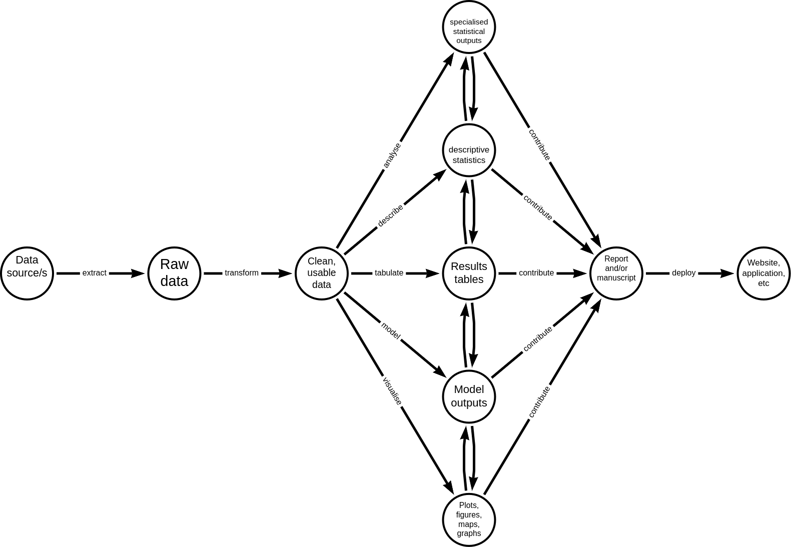

11 Creating portable and reproducible scientific workflows
At this point, you would have written your own R code and R scripts and saved these within an R file (.R).
By now, you would have also appreciated how extensible R is through built-in packages and/or through functions that you have created yourself.
So far, in the examples that we have worked on, the operations and the problems have been quite straightforward. But from your own experience dealing with your own data, real world data is far from straightforward and far from simple. Complexity is almost always a given.
R’s scripting capability and R’s extensibility are its main characteristics that make R a good tool for creating robust scientific workflows particularly for complex data and research projects.
A typical scientific workflow would have the following steps:

In general, an R script should reflect the different steps outlined above. Hence, an R script of a scientific workflow would tend to look like this:
## Load libraries
## Retrieve and read data
## Process data
## Analyse data
### Descriptive analysis
### Statistical tests
### Model specifications
## Outputs
### Tabulation of results
### Model outputs
### Plots
## Report
In this chapter, we will go through a step-by-step walkthrough of how to build a robust scientific workflow in R. A robust worklow is one that is portable i.e., not dependent on hardware and software and instead can be run on almost any machine with very minimal, if any, additional setup or configuration required, and one that is reproducible i.e., can be run over and over again without issues, providing the expected results with the same data or providing updated results with new and/or updated data.
11.1 Step 1: Create a new RStudio project
Open RStudio
Click on the
Fileoption in the RStudio menu. In the dropdown menu, selectNew ProjectIn the menu window, select
New directoryoption.In the next menu window, select
New projectoption.In the next menu window, enter the following details:
Name of the project - important to make the project name as short as possible but descriptive of the project you are creating; don’t use spaces, instead use dash (or underscore) and avoid using capital letters;
Select the directory in your computer in which you want to save the project in. Click on
Browseto open your computers file manager and navigate to the directory you want to save your project in;Tick the selection box to make this project a git repository (whilst this is not necessary, this is highly recommended especially if you are collaborating with others);
Tick the selection box to enable
renvin this project (this is what mainly contribute to the portability of your project); and,Click on
Create project
11.2 Step 2: Create an R file called packages.R
Click on the
Fileoption in the RStudio menu. In the dropdown menu, selectNew Fileand then in the next dropdown menu, selectR script.A new tab will open in your text editor pane of RStudio (upper left pane) with the name Untitled1. Save this file by clicking on the disk icon on the text editor menu or do a keyboard shortcut with
CTRL + s. Give this empty R script the filenamepackages.R.You should now see a file in the main directory/root directory of your project named
packages.RAdd code in the
packages.Rfile specifying the packages you will be using in this project. There will be standard packages that we will always use with this type of workflow. So a template/genericpackages.Rfile will contain the following:
################################################################################
#
#'
#' General packages needed for a targets workflow
#'
#
################################################################################
library(targets)
library(tarchetypes)
library(here)
library(rmarkdown)
library(knitr)
library(kableExtra)
library(dplyr)
library(openxlsx)
library(ggplot2)
################################################################################
#
#'
#' Add other packages that will be used in the project below
#'
#
################################################################################
11.3 Step 3: Create placeholder directories for different components of workflow
In the lower right pane of RStudio (the file manager pane), find the menu button labelled
Folder.Give this new folder the label of
R. This filder will hold all bespoke functions that we will create to use for this project workflow;Repeat these steps to create new folders with the following labels:
data- This folder will hold any data that we retrieve as part of this workflow.outputs- This folder will hold all our workflow outputs such as plots/figures, tables (in Excel or CSV files), HTML and/or Word and/or PDF outputsreports- This folder will hold all our RMarkdown report (.Rmd) filesdocs- This folder will hold any of our deployed outputs such as HTML report, dashboard, etc.
These are placeholder directories which we will populate as we work through the workflow for this project.
11.4 Step 4: Create the target script file (_targets.R)
The next task is to create a {targets} script file (_targets.R) which is the file that will define the workflow that we will be creating.
Create the file by:
Clicking on File –> New File –> R Script in RStudio.
A new tab will show in your Source window on the top left quadrant of your RStudio screen. This tab will usually be called
Untitled1.Save this file first and change its name to
_targets.R. Make sure to save it in the current project directory.You know that you were successful in doing this once you see a file called
_targets.Rin the File system window in the lower right quadrant of your RStudio screen.
11.5 Step 5: Edit the _targets.R script file
Now, the next step is to edit your script file by adding sets of R code that does the following:
- Loads the packages required
- Loads custom functions (if any)
- Defines individual targets using
tar_targetsfunction - Ends with a list of targets objects
A basic {targets} workflow will look like this:
## Load libraries --------------------------------------------------------------
library(targets)
## Load custom functions -------------------------------------------------------
for (f in list.files("R", full.names = TRUE)) source (f)
for (f in list.files(here::here("R"), full.names = TRUE)) source (f)
## Create targets and list targets objects -------------------------------------